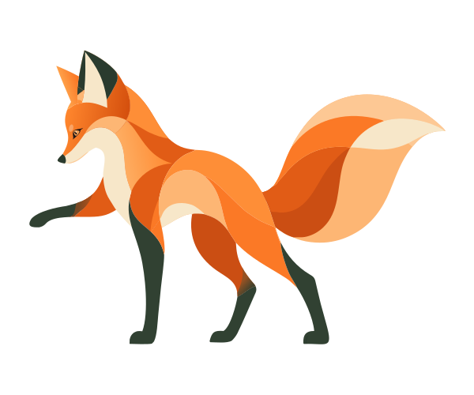
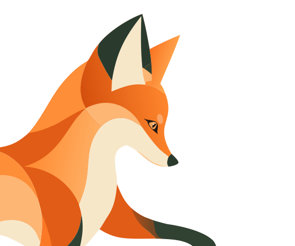
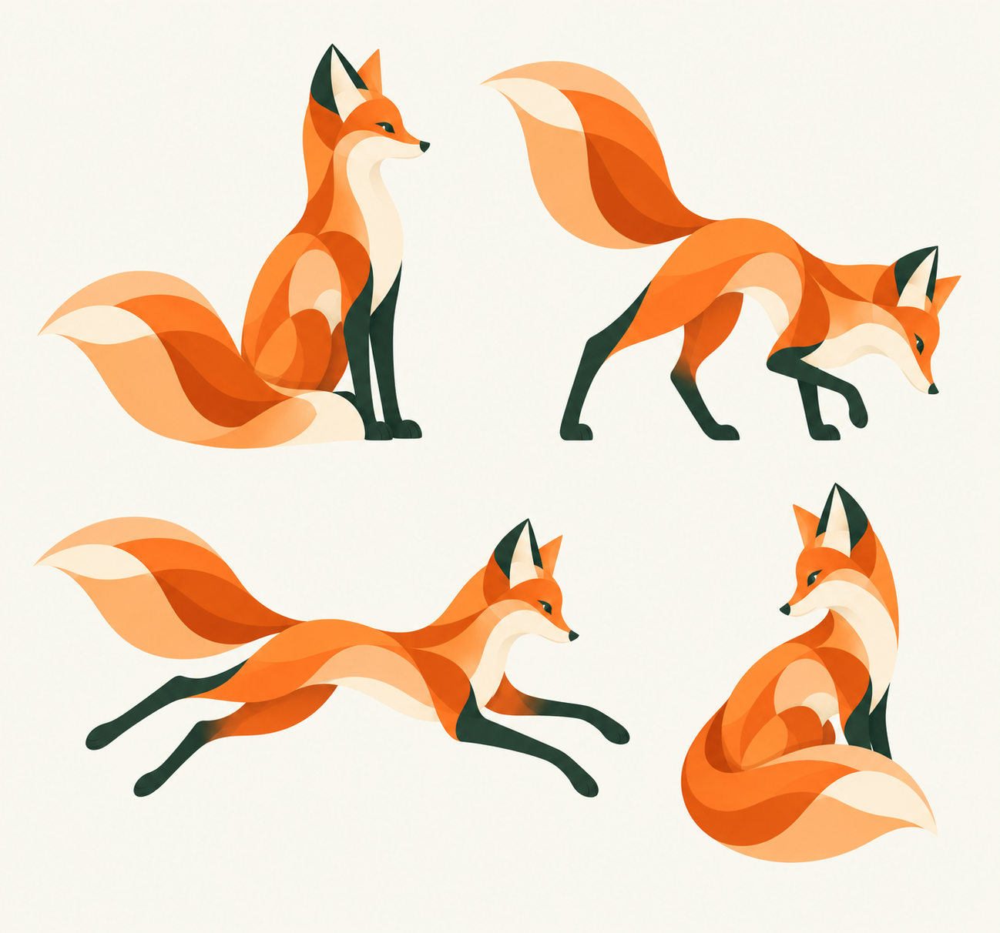

Keep the character.
Small tapered head, tall triangular ears, forest-green legs, cream chest, and the same generous tail. A new pose should still feel like this fox.
Zebang Wu / Visual language / 2026
An orange fox, a clear line, and room for curiosity. A shared language for character, illustration, typography, and motion.
01 / The supplied illustration

Long legs, an attentive gaze, a cream chest, and a broad, sweeping tail. Orange planes carry the fox; sage and forest green give its surroundings a quieter voice.
The paper road makes the opening invitation concrete: follow a question and see where it leads. The workbench and small car connect making with exploration.
The web derivative retains every source path. Tail, eye, paper curl, car, and individual leaves have restrained motion; connected anatomy stays intact.
02 / Reusable vector references
Extracted directly from the supplied drawing. These are reusable treatments of its original reaching pose, with shared proportions and a transparent artboard.


Use color when the fox is the focus. Use the contour in margins and transitions, with fewer internal lines at small sizes. Keep the long-legged proportions and leave room around the tail.
03 / New pose concepts · for review
Four proposed poses, generated from the supplied reference: listen, investigate, leap, and turn back. This sheet explores character consistency; these are raster concepts awaiting selection and vector cleanup. Their eye shapes still need to match the original vector detail above.

Small tapered head, tall triangular ears, forest-green legs, cream chest, and the same generous tail. A new pose should still feel like this fox.
Listening for the human question; inspecting for research; movement for a working system; turning back for what someone learns from it.
Choose the still image first, then clean its shapes and separate only the parts that need to move. The concept sheet is not an animation rig.
The opening scene uses the supplied artwork. Notice now uses the supplied close-up illustration, converted locally into editable vectors. Test also uses the supplied overhead scene: the fox selects a point on a contour map. Build and Return retain the earlier studies while new artwork is being prepared. See the current scenes below. Source notes & generation prompt ↓
04 / Chapter scenes · first integrated set
The supplied Notice close-up keeps its own two-eye geometry and enters through an open frame. The supplied Test scene changes viewpoint to an overhead sampling map. Build and Return remain earlier generated concepts, cleaned into native SVG paths. These are editorial illustrations inspired by the work, not depictions of actual participants, interfaces, or research results.

A three-quarter close-up: an attentive fox, an offered notebook, and a hand entering through an open frame.

An overhead fox selects an orange sample on a contour map, following a short path from an earlier observation.

A miniature car meets a bend and an obstacle on a test road.

A laptop becomes a shared learning moment; someone has a question.
The PNGs remain unchanged. Local vector tracing simplifies the color planes. Notice couples the hand and notebook into one gesture, with an independent tail sway; Test draws attention to the selected sample. The other scenes retain their restrained prop and character motion. These are limited scene rigs, not complete articulated characters. Exact prompts & production record ↓
See the scenes in the story ↗05 / The palette
#193d30#f7f5ed#f47b20#d84b12#ffaf6a#b7c4a506 / Seven typographic roles
Garet Heavy gives Display its weight and a compact 1.15 line-height. Best Swashed keeps 1.4 for its tall forms, in muted green. Supporting labels stay legible; body copy gets a steady rhythm.
Follow a question.
See where it leads.
A question becomes a comparison.
An invitation to follow the question.
Good interfaces make complex things approachable.
Context, captions, roles, and dates.
Notice / Test / Build / Return
The supplied font files are retained with their source notes. Best Swashed is marked “personal use only”; commercial use requires the corresponding license.
07 / Illustration and motion
Listening begins with a person. A question meets resistance. A useful thing reaches someone, and a response comes back. Every scene expresses the chapter’s central action.
A notebook settles, a measurement marker rises, and a car makes a small move along its road. A slow tail sweep keeps the fox present; human gestures stay small and furniture anchors the scene.
Use one principal motion at a time. Keep labels still, respect reduced-motion preferences, and pause scenes when they are out of view.